관광 명소 15곳
사진은 Wikimedia Commons에 공개된 실제 촬영본이며, 저작자와 라이선스를 각 사진 아래에 적었습니다. 촬영한 날씨·시기·구도에 따라 실제 모습은 다를 수 있습니다.
-
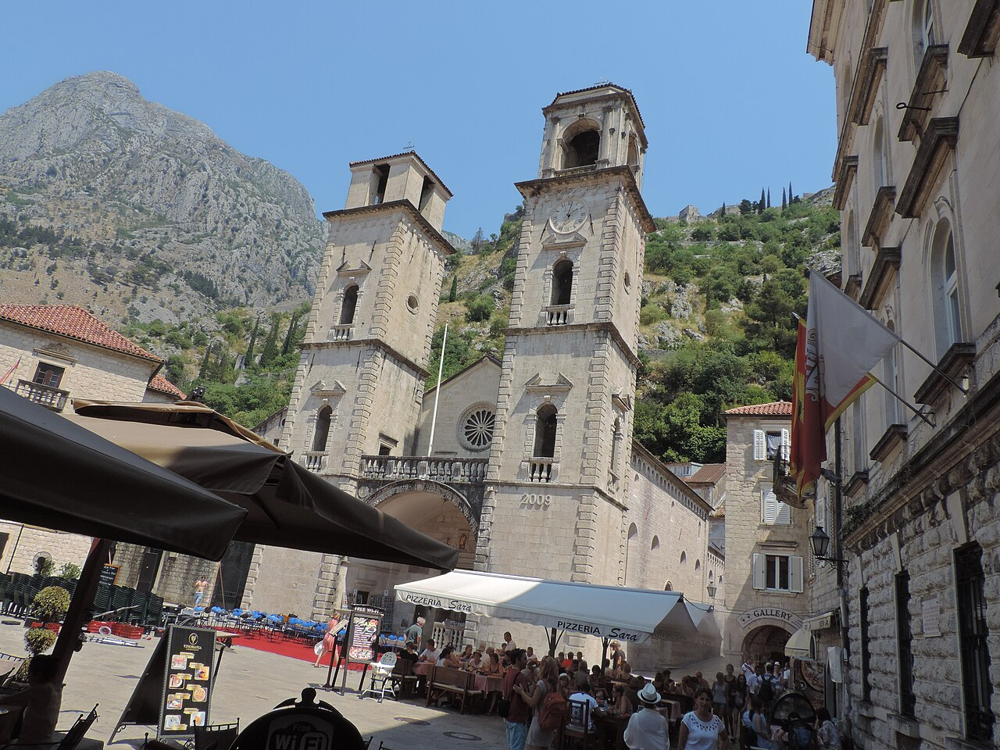
사진: Jan Starec · CC BY-SA 3.0 · Wikimedia Commons 코토르 구시가지·성벽Kotor Stari Grad
베네치아 시기 성벽과 중세의 좁은 골목, 성 트리폰 대성당으로 알려진 항구 도시.
자세히 보기
-
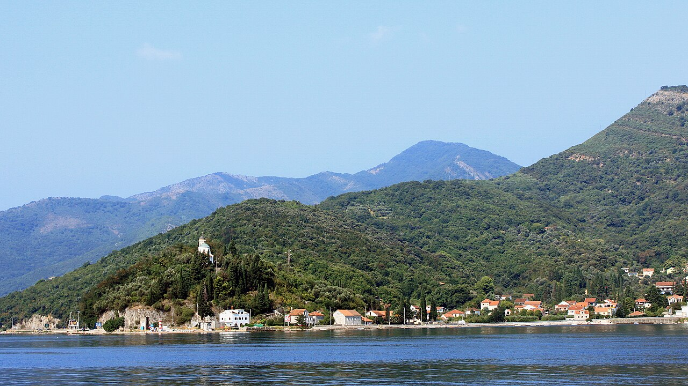
사진: Marcin Konsek · CC BY-SA 4.0 · Wikimedia Commons 코토르만Boka Kotorska
가파른 산과 만입된 해안, 작은 항구 마을들이 이어지는 지형. 피오르라고 불리기도 하지만 지형학적으로 빙하 피오르와 동일하지 않다.
자세히 보기
-
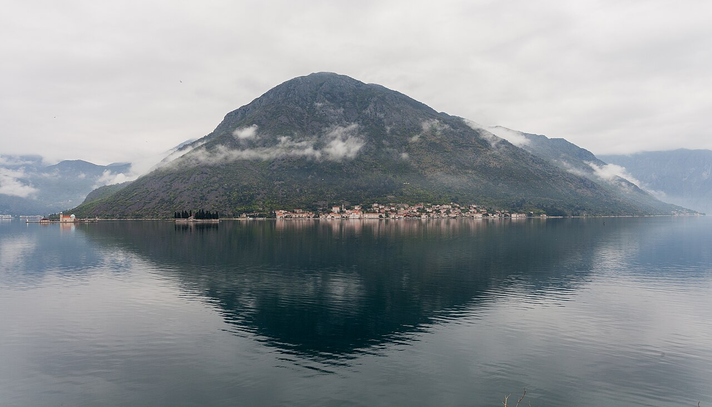
사진: Diego Delso · CC BY-SA 3.0 · Wikimedia Commons 페라스트·바위 위의 성모섬Perast / Gospa od Škrpjela
바닷가 바로크 석조마을과 인공섬의 성당. 섬의 제단화와 지역의 해양신앙 이야기도 전해진다.
자세히 보기
-
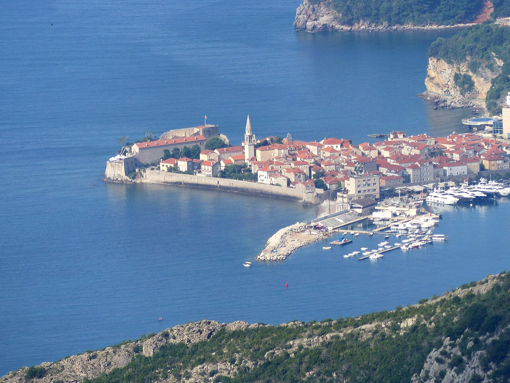
사진: Wolfgang Sauber · CC BY-SA 4.0 · Wikimedia Commons 부드바 구시가지Budva Stari Grad
아드리아해를 마주한 성벽도시와 바닷길, 여름 해변 관광지. 코토르와 달리 바다가 열린 해안 시야가 대표적이다.
자세히 보기
-
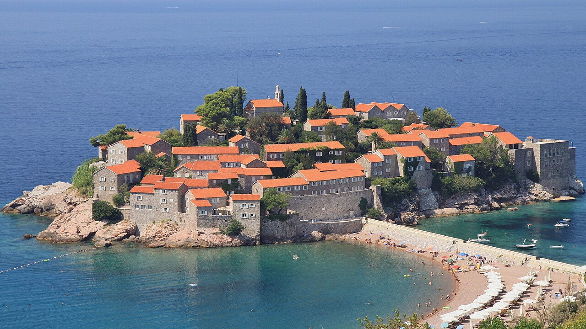
사진: Marcin Konsek · CC BY-SA 4.0 · Wikimedia Commons 스베티 스테판 섬Sveti Stefan
좁은 모래 지협으로 해안과 이어지는 붉은 지붕의 작은 섬. 내부 시설은 운영 상황에 따라 접근이 제한될 수 있어 주로 바깥에서 조망하는 명소이다.
자세히 보기
-
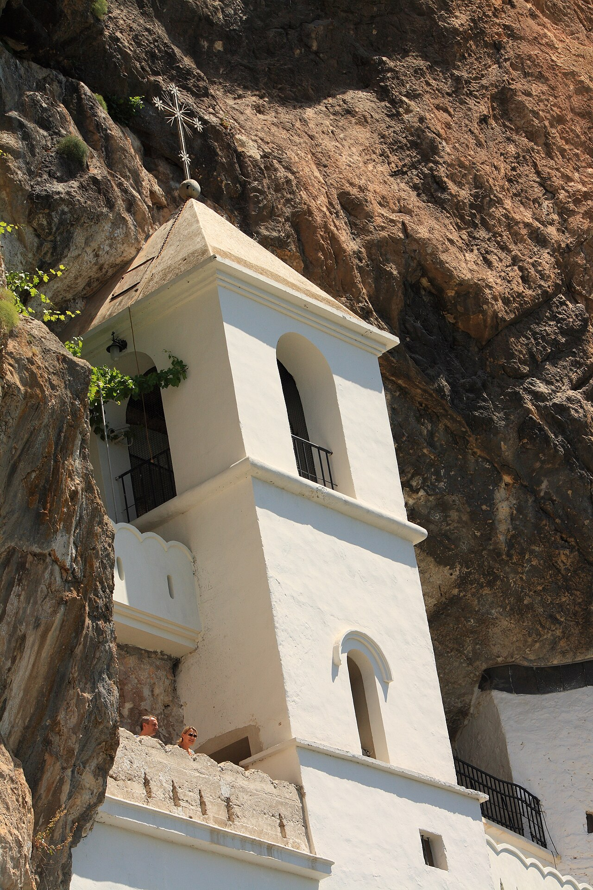
사진: FrDr · CC BY-SA 4.0 · Wikimedia Commons 오스트로그 수도원Manastir Ostrog
거대한 수직 절벽 중턱에 흰 수도원이 들어선 성지. 방문 시 종교시설 복장과 차량·보행 접근 안전을 고려한다.
자세히 보기
-
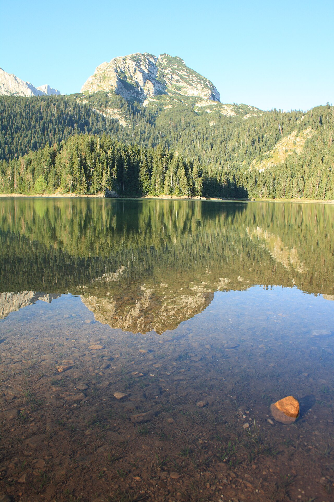
사진: FrDr · CC BY-SA 4.0 · Wikimedia Commons 두르미토르 국립공원Nacionalni park Durmitor
고산 호수, 빙하 지형, 협곡, 검은 호수(Crno jezero)가 상징. UNESCO 세계유산이며 날씨 급변과 산악 트레킹 난도가 중요하다.
자세히 보기
-
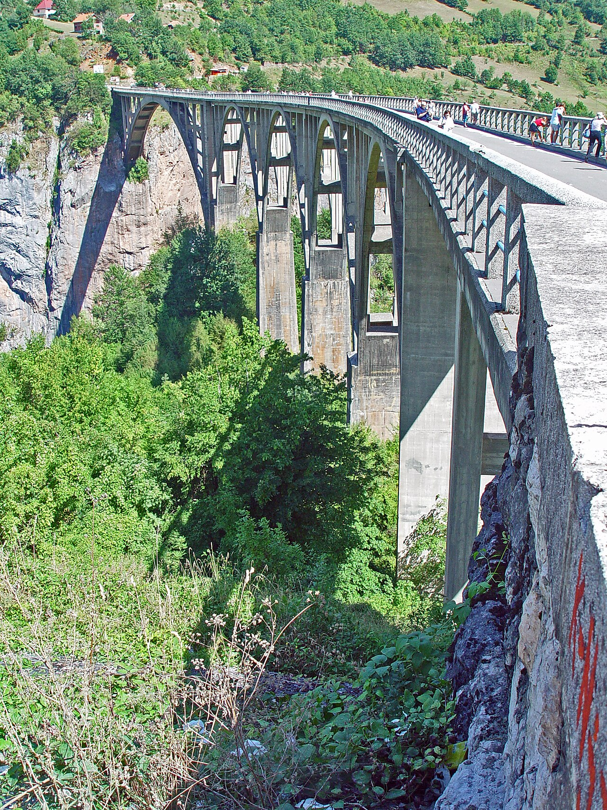
사진: Etan J. Tal · CC BY-SA 3.0 · Wikimedia Commons 주르제비차 타라교Most na Đurđevića Tari
높은 콘크리트 아치교 아래로 깊은 타라강 협곡이 흐른다.
자세히 보기
-
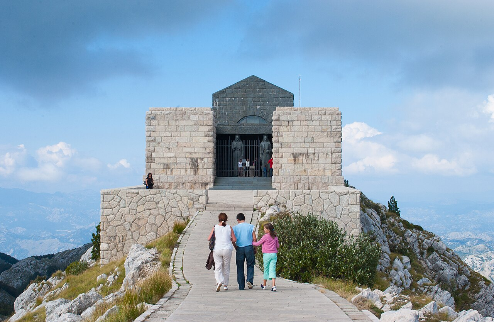
사진: photo by Darko Bulatovic · CC BY-SA 4.0 · Wikimedia Commons 로브첸산·녜고시 영묘Lovćen / Njegošev mauzolej
암산 정상부의 거대한 계단과 영묘, 해안·내륙을 조망하는 전망대. 기상·도로 상황을 확인해야 한다.
자세히 보기
-
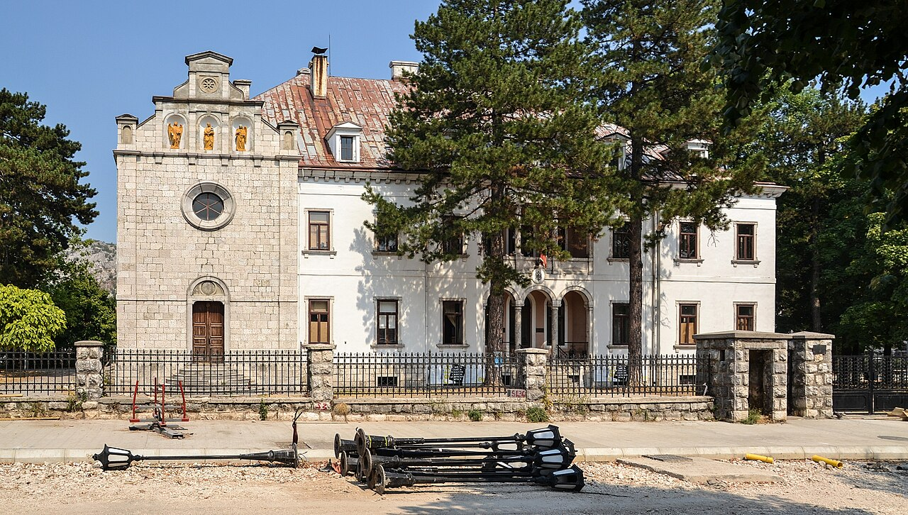
사진: Pudelek · CC BY-SA 4.0 · Wikimedia Commons 체티네 역사도시Cetinje
옛 왕궁, 박물관, 외교공관 건물 등이 모여 있는 역사적 수도. 19~20세기 국가 형성의 역사를 보여 주는 도시이다.
자세히 보기
-
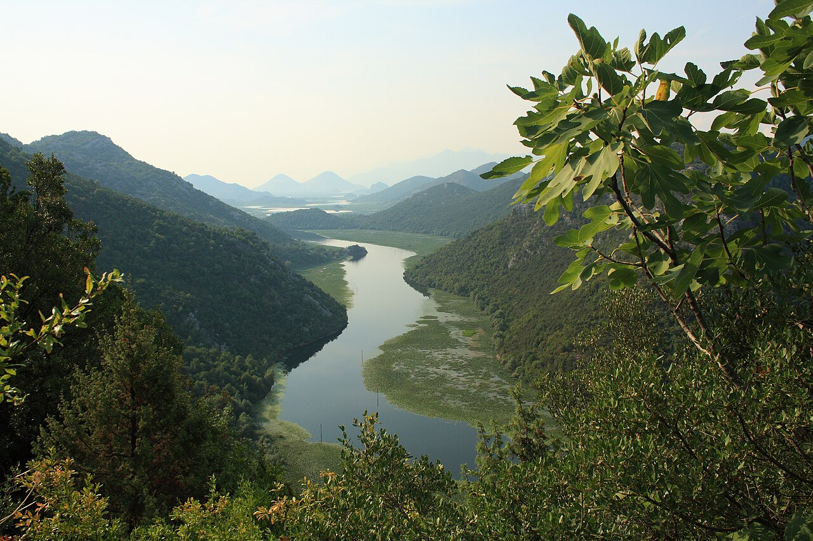
사진: FrDr · CC BY-SA 4.0 · Wikimedia Commons 스카다르 호수Skadarsko jezero
발칸 최대 호수권 중 하나로 수초·수로·수조류가 특징.
자세히 보기
-
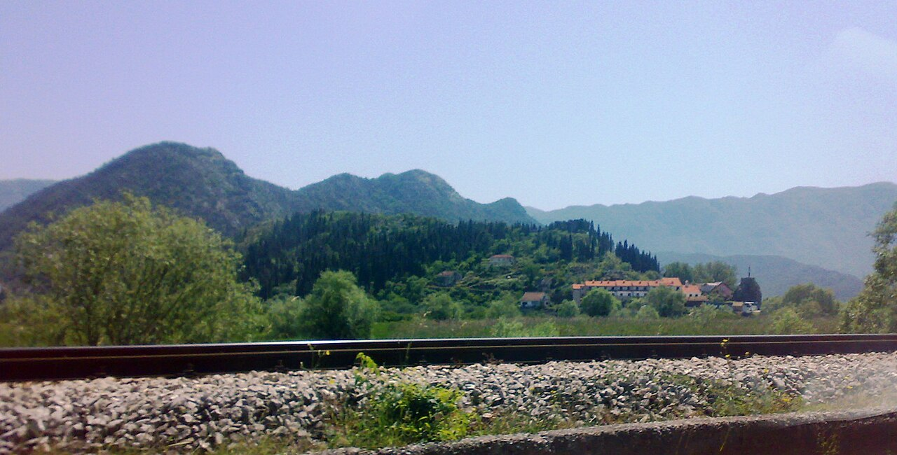
사진: Bjoertvedt · CC BY-SA 3.0 · Wikimedia Commons 비르파자르 수상마을Virpazar
호수 투어의 관문으로 보트와 오래된 석교·시장 마을의 분위기가 뚜렷하다.
자세히 보기
-
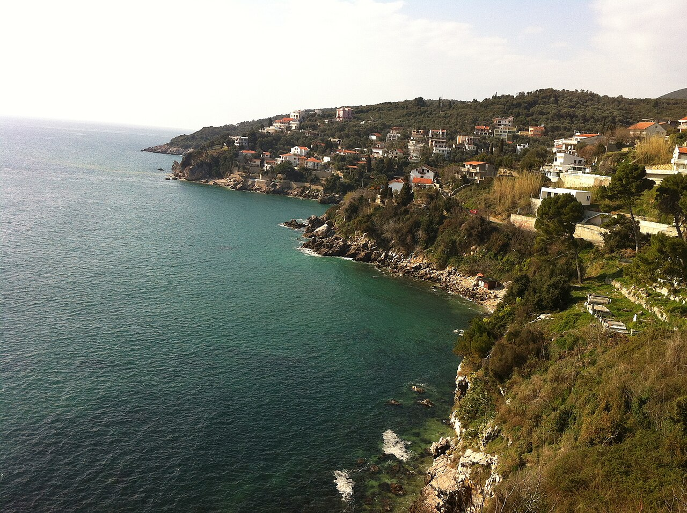
사진: ines lukic · CC BY 3.0 · Wikimedia Commons 울치니 구시가지·긴 해변Ulcinj / Velika plaža
오스만 문화와 알바니아계 공동체의 역사, 길게 이어지는 모래사장이 특징이다.
자세히 보기
-
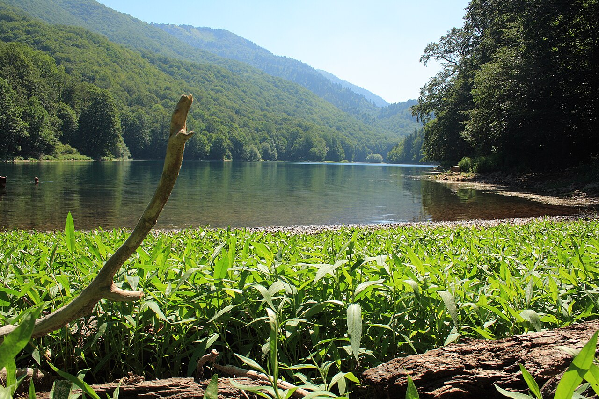
사진: FrDr · CC BY-SA 4.0 · Wikimedia Commons 비오그라드스카 고라 국립공원Biogradska gora
울창한 보호림과 고산 호수가 특징인 북부 생태관광지. 원시림 보호·탐방로 규정을 확인한다.
자세히 보기
-
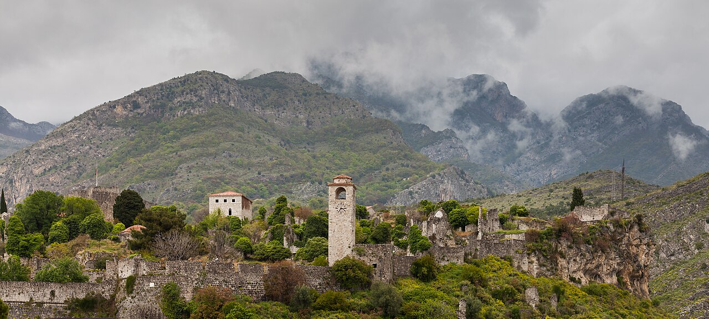
사진: Diego Delso · CC BY-SA 3.0 · Wikimedia Commons 스타리 바르 성곽유적Stari Bar
산기슭에 보존된 중세·오스만 시대 폐허도시. 항구 도시인 현대의 바르와는 다른 곳이다.
자세히 보기
여행 전에 확인하세요
운영시간·입장료·예약·개방 여부는 계절과 상황에 따라 바뀝니다. 방문 전에 각 명소의 공식 안내에서 다시 확인하세요.